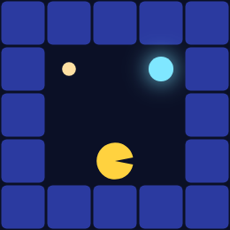

Bounded Agents: Reward-Myopia and Update-Myopia
Ports agentmodels.org Ch 5c (myopic agents).
A rational Pac-Man plans to the horizon and assigns the right price to every fact he could discover. Real Pac-Man — and the people agentmodels.org wants to model — does neither. This chapter adds two bounds to the planner and watches them make Pac-Man fail in two distinct, characteristically human ways. The glyph and scoring legend lives on the shared page; here we only change how far ahead Pac-Man can think.
Both bounds live in the same delay-indexed expected-utility recursion the discounting chapter introduced. The key idea: the recursion carries a subjective delay d alongside objective time, and each bound is a single comparison against d.
Reward-myopia: a horizon cap C_g
Reward-myopia says: value everything past C_g look-ahead steps at exactly zero. Pac-Man becomes greedy about whatever pellet is close and blind to anything further out. The whole mechanism is one extra clause in the base case of the recursion:
(defn delta
"Hyperbolic discount factor at subjective delay `d`: 1/(1 + k·d).
δ(k,0)=1; strictly decreasing in d for k>0; k=0 ⇒ δ≡1 (no discounting)."
[k d]
(/ 1.0 (+ 1.0 (* (double k) (double d)))))
delta is the discount; reward-myopia rides on top of it. Inside build-biased-eu the expected-utility function eu reads:
(fn [s a t d]
(let [u (* (delta k d) (get-in Rh [s a]))]
(if (or (terms s) (<= t 1) (>= d cg))
u
(+ u (* gamma
(reduce-kv
(fn [acc s' pr]
(if (pos? pr)
(+ acc (* pr (backup s' (dec t) (inc d) (pd-fn d))))
acc))
0.0 (get-in Th [s a])))))))
Read the if: the agent stops recursing — returns only the discounted immediate reward u — when the state is terminal, when objective time runs out (t ≤ 1), or when the subjective delay reaches the cap (d ≥ cg, where cg is :reward-myopic-bound). Everything beyond C_g steps contributes nothing. The default is ##Inf: with no cap the clause never fires and you get the ordinary unbounded agent back.
The companion test builds a one-row corridor — a small reward one step to Pac-Man’s left, a big reward five steps to his right — and asks where he heads first:
(defn line-first-action [cg]
((:act (bp/make-biased-mdp-agent {:mdp lmdp :alpha ##Inf :gamma 1.0 :n-iters 10}
{:discount 0.0 :bias :sophisticated :reward-myopic-bound cg}))
l-start))
;; action 0 = left (toward small/near), 1 = right (toward big/far)
The unbounded agent (C_g = ##Inf) walks right, toward the big reward five steps away — action 1. The capped agent (C_g = 2) cannot see five steps, so the big reward is invisible and it grabs the small one to its left — action 0. Same world, same utilities; the only difference is how far the agent is allowed to look.
This is also the limit-recovery anchor. With :discount 0.0 the discount δ ≡ 1, the recursion no longer depends on d, and a biased agent with C_g = ##Inf reproduces the standard agent exactly. The test confirms it numerically against both the recursive expected utility and the tensor value-iteration Q: across every state-action pair, the maximum disagreement is below 1e-4 (for both a soft α = 1.0 policy and a hard α = ∞ policy), and the first action at the start state agrees. The bound is a true superset — turn the knob to infinity and the bias disappears with no residue.
Update-myopia: a belief-update cap C_m, and the failure of curiosity
Reward-myopia bounds how far you look for reward. Update-myopia bounds how far you look for information — and it is the more interesting failure, because it is the failure to be curious.
In a POMDP, a good plan can be worth taking because it reveals something: walk to the signpost, learn where the reward is, then commit. Valuing that detour requires the planner to simulate its own future belief updating. Update-myopia severs exactly that: the agent plans as if it will stop learning after C_m steps. Past that point its simulated future self is frozen — it keeps acting but never revises its belief — so any information available only farther ahead is priced at zero. The agent under-explores.
In the belief-space recursion this is one gate on the Bayes filter:
;; I_{d<C_m}: keep the observation factor while d<C_m, else ignore it (the
;; simulated future self stops learning — push-forward only, which for a
;; world-independent transition leaves the belief unchanged).
(gated (fn [belief s' o d]
(if (< d cm) (bayes-update worlds observe belief s' o) belief))
While the simulated delay d is below the cap cm (:update-myopic-bound), gated runs a real Bayesian update on the belief. Once d ≥ cm it returns the belief untouched — observations stop counting. Crucially this gate biases planning only: the real rollout filter, :update-belief, is the ungated bayes-update, so the agent genuinely keeps learning as it walks — it just fails to anticipate that it will.
The test world is a walk-and-check POMDP. Two goals — A at one end of the top row, B at the other — and a signpost one step below the start that reveals which goal actually pays. The prior is {:A 0.55 :B 0.45} and the true rewarding goal is B (the minority of the prior).

This is the haunted maze the legend describes — the reward is hidden, and the only way to learn it is to detour onto the signpost. The figure shows what an update-myopic agent never plans: the small step down to read the sign before choosing a corridor.
(def opt (pomdp-agent ##Inf)) ; optimal: values information
(def myo (pomdp-agent 0)) ; update-myopic: never updates in look-ahead
;; action 3 = down = the 1-step detour onto the signpost (which reveals the world)
The optimal agent (C_m = ##Inf) chooses action 3 — down, onto the signpost — first. The update-myopic agent (C_m = 0) does not: with its planned belief frozen at the prior, the detour buys nothing, so it skips it. Rolled out under the true world B, the consequences diverge cleanly. The optimal agent walks and checks, then reaches the true goal B. The myopic agent commits blind to the higher-prior goal A — and is wrong.
You can see the value-of-information directly in the numbers. Comparing the value of stepping toward the signpost against stepping toward goal A, the optimal agent prefers the detour by strictly more than the myopic one does. Stronger: the optimal agent values the very same detour action by more than 1.0 above the myopic agent — roughly the gap between collecting the true reward and committing blind. That gap is information value, not a one-step time-cost artifact: the myopic agent’s planner literally cannot represent that the step is about to teach it something.
A reassuring closing detail from the test: the bound only touches planning. Hand the agent an un-normalised prior {:A 1.1 :B 0.9} and it normalises internally to sum 1, then acts identically to the {0.55, 0.45} agent — the belief recursion always reasons over a genuine distribution.
Two knobs, one recursion
Reward-myopia (d ≥ C_g truncates value) and update-myopia (d < C_m gates learning) are independent comparisons against the same subjective-delay counter. Neither needs a new engine, a new handler, or a new inference path — they are pure host arithmetic over the expected-utility recursion, and at the unbounded limit both vanish into the rational agent. Bound a planner two different ways and you get two different shapes of human shortsightedness from one line of code each.
Next: when the world itself is uncertain, and we must do inference over an agent’s plan rather than just run it forward.